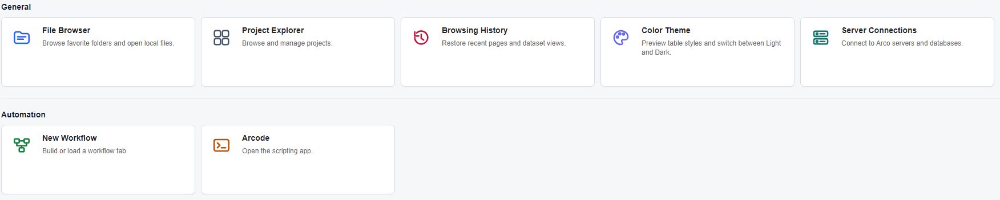

App Navigation
Find your way around Arco
Open a project, keep related work together, and return to the pages you use most often.
Start from Home
- Choose the Home tab. The welcome area identifies the current user; this guide uses the fictional analyst Jordan Lee.
- Choose Project Explorer to browse projects, Server Connections to check your connection, or Arcode to open the scripting app.
- For the demo, expand Test/Demos in Project Explorer and double-click Monthly_Insurance_Dataset.
- On its Project Page, select Commercial Auto → All States → CH02 → Comprehensive.

Move Between Open Work
- Click a top-level tab to bring that page forward. Dataset and method windows opened from a Project Page remain within that project workspace.
- Click the title bar of a dataset or method window before using a menu command, so the intended window is active.
- Use Ctrl + Page Up or Page Down to move between the active dataset or method's inner tabs, such as Details, Data, and Notes.
- Use a window's minimize control to make room for the project table, or close it when finished. Read any unsaved-changes prompt before discarding work.
File → Save or Ctrl + S saves the active work. Check the visible completion or error message before moving on.
Return to a Useful Page
Choose Browsing History from Home to reopen a recent project or dataset view. For a page you use regularly, keep it open, create a custom group on Home with + New group, and use the group's menu to add a shortcut card for the open page.
Use Help → User Guide to open this guide in your browser. For a focused next step, continue to the Project Page walkthrough.